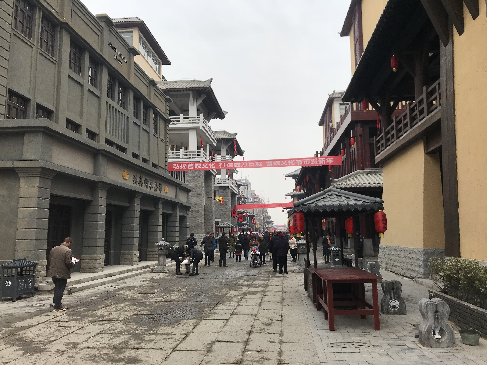

我家的特色年味
想必有很多人曾在书中剧内数度玩味三国时那股股混沌中夹杂着些许血特有咸腥的风，憧憬过那位位暴戾中透露着几分霸气的王。静听远古的编钟在时空中的回响，壮士的怒号在河川中的激荡，仿佛正是这些或雅致或激昂的点点律动谱出了眼帘中映出的那些直栏横槛、雕栏画柱、壮美河山。但是并非所有人都知道，那位在碣石旁静观沧海、以伏枥老骥自比的那位老人曹操安置其玉玺之处乃名为许都，或曰：许昌。
今年回到许昌后，令我感触最深的便是建筑风格上的大幅转变。原本破旧的小平房摇身一变化为了开阔敞亮的广场、毫无特色的小楼被艺术家们琢磨玩味，施以细工，竟也散发出一股古色古香。最令人拍手叫绝的是其亦真亦假的设计，将真正的古建筑和经过装饰的新建筑有机的融合在了一起，令人浮想联翩。春节至，演绎来。曹操上朝大队的表演，和着编钟古筝中荡漾出的旋律，给往来其间的游者以一种独特而奇妙的体验，环视四周，又有皮影戏、铁匠铺与镖局等来增添春节之喜庆气氛。
会亲朋，见好友，赏灯笼，泛游船，逛庙会，乐游园。没了鞭炮的喧嚣，少了龙狮的聒噪，拭去世俗的尘埃，漫步历史之河畔，此之谓许昌之春节也。
